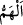

24. Andolsun ki kadın ona meyletti. Eğer Rabbinin işaret ve ikazını görmeseydi o
da kadına meyletmişti. İşte böylece biz, kötülüğü ve fuhşu ondan uzaklaştırmak
için (işaretimizi gösterdik). Şüphesiz o ihlâsa erdirilmiş kullarımızdandır.
“Andolsun ki kadın ona meyletti.”
“  (meyletmek)”, hayırlı veya şerli herhangi bir fiili yapmadan önce kalbin o fiili
yapmaya karar vermesi, ona yönelmesidir. Burada Züleyhâ’nın Yûsuf’la birleşmeyi arzu
ettiği anlatılmak isteniyor. Çünkü şahısların bizzat kendilerine meyledilmez. Yâni
Züleyhâ bu birleşmeyi kolaylaştıracak şartları hazırladıktan sonra birleşmeye kesin
olarak karar verip bu fiile yöneldi. Ondan kâm alma, kapıları kilitleme ve ‘Haydi gel!’
diyerek Yûsuf’u kendisine dâvet etme gibi fiilleri de yerine getirdi. Belki de o sırada
kollarını açmak, kucaklamaya çalışmak ve Yûsuf’u kapıya doğru kaçmaya mecbur
edecek başka fiiller de yapmıştır.
Yeminle sözün te’kid edilmesi, Yûsuf’un önce geçen sözlerindeki engelleyici ifadeler
sebebiyle Züleyhâ’nın teşebbüsünden vazgeçmiş olabileceği şeklindeki muhtemel
düşünceyi bertaraf etmek içindir.
“Eğer Rabbinin” zinanın çirkinliğini gösteren apaçık “işaret ve ikazını görmeseydi o
da kadına” onunla birleşmeye “meyletmişti.” Yani beşerî tabiatı ve gençliğinden ileri
gelen şehveti gereği yaratılışında var olan meyil ile meyletti. Bu meyil, ihtiyarî bir
yönelme olmayıp neredeyse mes’ul bile tutulmayacak bir meyil idi. Çünkü Yûsuf bu
çirkin işin, bu bâtıl davranışın bizzat kendisini irtikab etmekten uzak olduğu gibi harama
meyletmekten de uzaktır. Yûsuf’un bu durumunun ‘meyil’ olarak ifade edilmesi,
Züleyhâ’nın meyline benzediğinden değil, sırf -müşâkele[24] metodu ile- Züleyhâ’nın
arzulamasının yanında zikredilmesinden ileri gelmiştir. Zaten âyette “İkisi de
birleşmeye meyletti.” veya “Her biri diğerine meyletti.” buyrulmayarak bu iki
arzulamanın birbirinden farklı olduğuna işaret edilmiştir.
Şeyh Üftâde (k.s.) hazretleri der ki: “O da kadına meyletmişti.” demek, Yûsuf beşerî
tabîatına saldırarak onun gerektirdiği şeyi yok etti, onun hükmettiği şeyi yapmadı,
demektir. Çünkü beşerî tabîatın böyle bir talebde bulunmaması bir eksikliktir. Bilakis
kemâl, son derece istekli olmakla birlikte bu tabîatın hükmüne karşı koyabilmektir.
İnsan böylece terakkî eder, Rahman’ın katında yüce mertebelere nail olur. Siz hiç
iktidarsız birinin cinsî münâsebeti terk ettiği için medhedildiğini gördünüz mü?”
Mesnevî’de şöyle denilir:
Kendine gel de kendini hadım etme, papaz olma.
Çünkü iffet, şehvetin zıddıdır
Hevâ olmadan ‘hevâdan çekinin’ denmesi mümkün değildir
Ölülere gazilik taslanmaz ya!